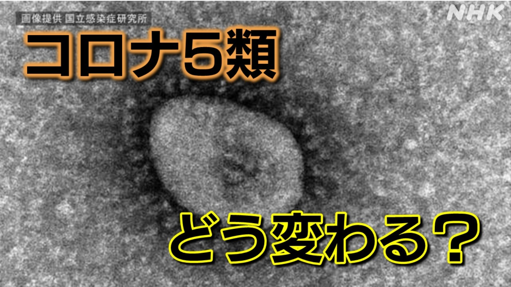
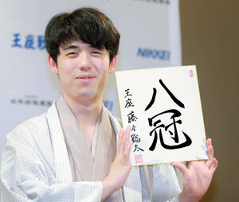

LIST
2023年内の気になるニュース
新型コロナ、インフル同等扱いに＝「５類」へ移行
「なぜ気になったのか」
新型コロナウイルスが流行してから約三年、 インフルと同じ５類になったら生活は、どう変わっていくのか気になったからである。
「それについてどう考えているか」
まず5類とは、国が感染症発生動向調査を行い、 その結果等に基づいて必要な情報を国民一般や医療機関に提供・公開していくことによって、 発生・まん延を防止すべき感染症のことであり決して油断していい訳ではありません。 そしてマスクの着用は3月13日以降は原則として、個人の判断にゆだねられることになりました。 また、文部科学省は、学校ではマスク着用を求めないことを基本にすると決めました。 しかし、他人に病気を移さないためにも、マスク着用を気にかける必要はあると考えます。
藤井総太、初の全八冠制覇
「なぜ気になったのか」
将棋の長い歴史の中で、 史上初となる全八冠制覇を21歳という若さで成し遂げた 藤井総太という人物に興味をもったためである。
「それについてどう考えているか」
藤井総太の全冠制覇は八冠時代初の快挙となる。藤井総太という人物は正確さと速さ、大局観という純粋な棋力に加え、勝負術、棋理に対する探究心 そして驚くべきは圧倒的なメンタル、揺れない心、加えて超人的な体力持久力、つまり必要なものを全て持っている…まさに棋神 さらに言えばそこまで自分を高めるために必要な向上心、人間性、自己管理能力を持ち合わせておりそれが藤井総太の土台となっていると言えます。